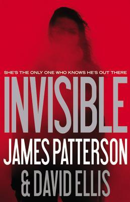

Invisible

"Graham Session
Recording #1
August 21, 2012
Welcome to my world. You can call me Graham, and I'll be your host.
You don't know me. My anonymity is a testament to my success. As I'm sitting here talking to you, I'm not famous. But I will
be when these recordings are released, whenever it is that I decide to release them. Then I'll be on the front page of every
newspaper and magazine around the world. They will write books about me. They will study me at Quantico. Websites will be devoted
to me. Movies made.
You will never know my real identity - "Graham" may or may not be my real name - so whatever you know about me will come from these audio
files, my oral diary. You will know what I let you know. I may tell you everything and I may leave some things out. I may tell you the truth
and I may lie to you."
Patterson, James, and David Ellis. “Invisible.” Invisible, WF Howes Ltd, 2015, pp. 13–14.
"This book is unbelievable. I cound't put it down but then I needed to put it down at times to take a breathe.
I'm not a fan of scary movies, so it was a huge feat reading a thriller like this. It was intense through the whole book,
with the biggest plot twist at the end. It will keep you on your toes!" Kiana Simonson
"Invisible’s protagonist, FBI analyst Emmy Dockery, has a vexing problem. Her sister died in a fire that investigators insist was accidental. Emmy, however, sees that conclusion much differently and moves beyond her personal grief to develop evidence that proves not only her sister was murdered, but numerous other victims suffered an identical fate.
Yet the biggest obstacle Emmy must overcome is convincing her boss of her hypothesis. FBI Executive Assistant Director Julius Dickinson is a man with whom Emmy has had previous disagreements. In fact, the acrimony between them is so intense that she refers to the man as, “The Dick.” She ultimately prevails in her efforts and receives permission to launch an investigation into the arson/murders, but only after she devises an elaborate scheme that puts her boss in an untenable position.
Her former fiancé, Harrison Bookman, aka Books, used to be an FBI special agent but now owns a bookstore. After Emily implores him to help find her sister’s killer, he agrees to return to his old job to head up the complex investigation.
Assisted by several other analysts, the team develops evidence that points to a diabolical scheme to torture and murder people. The twist is that even to the trained eye, the deaths appear to have been caused by accidental fires. The team dissects and analyzes every scrap of information about each of the dozens of heretofore accidental deaths and finally discovers a method of operation allowing them to zero in on a suspect.
Patterson and Ellis have created a unique antagonist, one they disguise so cleverly that readers will be shocked when they finally discover the monster’s identity.
The story is superbly written, particularly the treatment of the forensics. The evidence the FBI team must deal with is incredibly ghoulish, nevertheless, the investigative techniques and legal protocol are spot on.
Invisible is a difficult book to read because of the sheer horror and mayhem, but it’s even tougher to put down. Reading the story is almost like slowing down to look at a horrible traffic accident. You know you shouldn’t, but you do so anyway. Invisible is a thriller that will keep you up at night."
Patterson, James. “Invisible.” a Book Review by John M. Wills: Invisible, Little, Brown and Company, 23 June 2014, www.nyjournalofbooks.com/book-review/invisible.
Fonts
Proceed to CSS